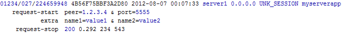

Overview
The overview for this chapter consists of the following topics:
Introduction
Chapter Outline
Introduction
This chapter describes the NCBI GRID framework. This framework allows creating, running and maintaining a scalable, load-balanced and fault-tolerant pool of network servers (Worker Nodes).
Note: Users within NCBI may find additional information on the internal Wiki page.
Chapter Outline
The following is an outline of the topics presented in this chapter:
Getting Help
Users at NCBI have the following sources for help:
JIRA for submitting a request or bug report. Select project C++ Toolkit and component GRID.
Mailing lists:
The GRID developers:
Dmitry Kazimirov for questions about Client-side APIs, Worker Nodes, auxiliary tools and utilities, administration - setup, installation, upgrades, and documentation.
Pavel Ivanov for NetCache server questions.
Victor Joukov for NetSchedule server questions.
Denis Vakatov for supervision questions.
GRID Overview
The following sections provide an overview of the GRID system:
Purpose
The NCBI GRID is a framework to create, run and maintain a scalable, load-balanced and fault-tolerant pool of network servers (Worker Nodes).
It includes independent components that implement distributed data storage and job queueing. It also provides APIs and frameworks to implement worker nodes and job submitters.
Worker nodes can be written from scratch, but there are also convenience APIs and frameworks to easily create worker nodes out of existing C++ CGI code, or even from CGI or command-line scripts and executables.
There is also a GRID farm where developers can jump-start their distributed computation projects.
Two PowerPoint presentations have additional information about the NCBI GRID:
Components
The NCBI GRID framework is built of the following components:
- 1
Network job queue (NetSchedule)
- 2
Network data storage (NetCache)
- 3
Server-side APIs and tools to develop Worker Nodes:
- 4
Client-side API
- 5
Remote CGI -- enables moving the actual CGI execution to the grid.
- 6
GRID Utilities for remote administration, monitoring, retrieval and submission (netschedule_control, netcache_control, ns_remote_job_control, ns_submit_remote_job, etc.)
All these components are fully portable, in the sense that they can be built and then run and communicate with each other across all platforms that are supported by the NCBI C++ Toolkit (UNIX, MS-Windows, MacOSX).
The NetCache and NetSchedule components can be used independently of each other and the rest of the grid framework - they have their respective client APIs. Worker Nodes get their tasks from NetSchedule, and may also use NetCache to get the data related to the tasks and to store the results of computation. Remote-CGI allows one to easily convert an existing CGI into a back-end worker node -- by a minor, 1 line of source code, modification. It can solve the infamous "30-sec CGI timeout" problem.
All these components can be load-balanced and are highly scalable. For example, one can just setup 10 NetCache servers or 20 Worker Nodes on new machines, and the storage/computation throughput would increase linearly. Also, NetCache and NetSchedule are lighting-fast.
To provide more flexibility, load balancing, and fault-tolerance, it is highly advisable to pool NetSchedule and NetCache servers using NCBI Load Balancer and Service Mapper (LBSM).
Architecture and Data Flow
NetSchedule and NetCache servers create a media which Submitters and Worker Nodes use to pass and control jobs and related data:
- 1
Submitter prepares input data and stores it in the pool of NetCache servers, recording keys to the data in the job's description.
- 2
Submitter submits the job to the appropriate queue in the pool of NetSchedule servers.
- 3
Worker Node polls "its" queue on the NetSchedule servers for jobs, and takes the submitted job for processing.
- 4
Worker Node retrieves the job's input data from the NetCache server(s) and processes the job.
- 5
Worker Node stores the job's results in NetCache and changes the job's status to "done" in NetSchedule.
- 6
Submitter sees that the job is done and reads its result from NetCache.
The following diagram illustrates this flow of control and data:

The GRID Farm
To help developers jump-start their distributed computation projects, there is a small farm of machines for general use, running:
Several flavors of job queues
Several flavors of network data storage
A framework to run and maintain users' Worker Nodes
NOTE: Most of the GRID components can be deployed or used outside of the GRID framework (applications can communicate with the components directly via the components' own client APIs). However, in many cases it is beneficial to use the whole GRID framework from the start.
NCBI users can find more information on the GRID farm Wiki page.
Worker Nodes
The following sections describe how to create, configure and run worker nodes:
Create a GRID Worker Node from scratch
The following sections describe how to Create a GRID Worker Node from scratch:
Purpose
Framework to create a multithreaded server that can run on a number of machines and serve the requests using NetSchedule and NetCache services to exchange the job info and data.
{kind=link}
Converting an existing CGI application into a GRID Node
The following sections describe how to convert an existing CGI application into a GRID node:
Purpose
With a rather simple and formal conversion, a CGI's real workload can be moved from the Web servers to any other machines. It also helps to work around the infamous "30-sec Web timeout problem".
Converting a CGI into a Remote-CGI server
- 1
Modify the code of your original CGI to make it a standalone Remote-CGI server (Worker Node). The code conversion is very easy and formal:
- a
Change application's base class from CCgiApplication to CRemoteCgiApp
- b
Link the application with the library xgridcgi rather than with xcgi
- 2
Replace your original CGIs by a one-line shell scripts that calls "remote CGI gateway" (cgi2rcgi.cgi) application.
- 3
Match "remote CGI gateways" against Remote-CGI servers:
- a
Ask us to register your remote CGI in the GRID framework
- b
Define some extra parameters in the configuration files of "remote CGI gateway" and Remote-CGI servers to connect them via the GRID framework
- 4
Install and run your Remote-CGI servers on as many machines as you need. They don't require Web server, and can be installed even on PCs and Macs.
{kind=link}
Features and benefits
Solves 30-sec Web server timeout problem.
Provides software infrastructure for back-end computation farm for CGIs. Cross-platform, Unix-Windows compatible, minimal administration.
Existing CGIs can be easily converted into back-end worker nodes.
While the request is being executed by the Remote-CGI server, the user can be interactively provided with a standard or customized progress report.
Can be used for parallel network programming.
High availability infrastructure. All central components can have 2-3 times reservation to accommodate request peak hours and possible hardware failures.
Remote-CGI servers are extremely mobile.
Remote-CGI servers can be administered (gentle shutdown, request statistics, etc.) using special tool.
Easy to debug, as the Remote-CGI server can be run under debugger or any memory checker on any machine (UNIX or MS-Windows)
Wrapping an existing CGI application into a GRID Node
The following sections describe how to wrap an existing CGI application into a GRID Node:
Running existing CGI executable through Grid Framework
In this case a real CGI does not need to be modified at all and remote_cgi utility serves as an intermediate between NetSchedule service and a real CGI. The real CGI and remote_cgi utility go to the server side. The remote_cgi gets a job from NetSchedule service, deserializes the CGI request and stdin stream and runs the real CGI with this data. When the CGI finishes the remote_cgi utility serializes its stdout stream and sends it back to the client.
On the client side (front-end) cgi2rcgi sees that the job’s status is changed to “done” gets the data sent by the server side (back-end), deserializes it and writes it on its stdout.
cgi2rcgi utility has two html template files to define its look. The first file is cgi2rcgi.html (can be redefined in cgi2rcgi.ini file) which is the main html template file and it contains all common html tags for the particular application. It also has to have two required tags.
<@REDIRECT@> should be inside <head> tag and is used to inject a page reloading code.
<@VIEW@> should be inside <body> tag and is to render information about a particular job’s status.
The second file is cgi2rcgi.inc.html (can be redefined in cgi2.rcgi.ini) which defines tags for particular job’s states. The tag for the particular job’s state replaces <@VIEW@> tag in the main html template file.
{kind=link}
Wrapping an existing command-line application into a GRID Node
The following sections describe how to wrap an existing CGI application into a GRID Node:
Running arbitrary applications through Grid Framework
The client side collects a command line, a stdin stream and some other parameters, serialize them and through Grid Framework to the server side. On the server side remote_app utility picks up submitted job, deserializes the command line, the stdin and other parameters, and starts a new process with the application and the input data. Then remote_app waits for the process to finish collecting its stdout, stdin and errcode. After that it serializes collected data and sends it back to the client side. The application for run is set in remote_app.ini configuration file.
Source code: src/app/grid/remote_app/remote_app_wn.cpp
Config file: remote_app.ini
Classes that should be used to prepare an input data a remote application and get its results are CRemoteAppRequest and CRemoteAppResult. See also CGridClient, CGridClientApp.
Client example: src/sample/app/netschedule/remote_app_client_sample.cpp
Config file: src/sample/app/netschedule/remote_app_client_sample.ini
ns_submit_remote_job utility allows submitting a job for a remote application from its command line or a jobs file. See ns_submit_remote_job –help.
Jobs file format:
Each line in the file represents one job (lines starting with ‘#’ are ignored). Each job consists of several parameters. Each parameter has in the form: name="value". The parameter’s value must be wrapped in double quotes. All of these parameters are optional. Supported parameters:
args – command line arguments.
aff – affinity token.
tfiles – a list of semicolon-separated file names which will be transferred to the server side.
jout – a file name where the application’s output to stdout will be stored.
jerr – a file name where the application’s output to stderr will be stored.
runtime – a time in seconds of the remote application’s running time. If the application is running longer then this time it is assumed to be failed and its execution is terminated.
exclusive – instructs the remote_app to not get any other jobs from the NetSchedule service while this job is being executed.
{kind=link}
Worker Node Cleanup Procedure
The following sections describe the procedure for cleaning up Worker Nodes:
Purpose
It is necessary to provide a framework to support worker node and job cleanup. For example, a job may create temporary files that need to be deleted, or a worker node may need to clean up resources shared by multiple jobs.
To receive cleanup events, the worker node must implement interface IWorkerNodeCleanupEventListener. The interface has a single abstract method:
void HandleEvent(EWorkerNodeCleanupEvent cleanup_event)
At the time of the call, cleanup_event will be set to either eRegularCleanup (for normal cleanup) or eOnHardExit (for an emergency shutdown).
There are two types of listeners: those called after each job is done and those called when the worker node is shutting down.
Job Cleanup
Listeners of the first type (per-job cleanup) are installed in the Do() method via a call to CWorkerNodeJobContext::GetCleanupEventSource()->AddListener():
class CMyWorkerNodeJob : public IWorkerNodeJob
/* ... */
virtual int Do(CWorkerNodeJobContext& context)
{
context.GetCleanupEventSource()->AddListener( new CMyWorkerNodeJobCleanupListener(resources_to_free));
}
Worker Node Cleanup
Listeners of the second type (worker node cleanup) are installed in the constructor of the IWorkerNodeJob-derived class via a call to IWorkerNodeInitContext::GetCleanupEventSource()->AddListener():
class CMyWorkerNodeJob : public IWorkerNodeJob
/* ... */
CMyWorkerNodeJob(const IWorkerNodeInitContext& context)
{
context.GetCleanupEventSource()->AddListener( new CMyWorkerNodeCleanupListener(resources_to_free));
}
Note that depending on the current value of the [server]/reuse_job_object configuration parameter, this constructor of CMyWorkerNodeJob can be called multiple times - either once per job or once per worker thread, so additional guarding may be required.
The approach of doing worker node cleanup described above is a newer approach, but there is an older approach which may also be used:
The IGridWorkerNodeApp_Listener interface has two methods, OnGridWorkerStart() and OnGridWorkerStop() which are called during worker node initialization and shutdown respectively. A handler implementing this interface can be installed using the SetListener() method of CGridWorkerApp. The code that calls the OnGridWorkerStop() method will run in the context of the dedicated cleanup thread and also respect the force_close parameter.
The older method does not require the guarding that the new method requires.
Job Submitters
An API is available to submit tasks to Worker Nodes, and to monitor and control the submitted tasks.
Implementing a Network Server
The CServer, IServer_ConnectionFactory, and IServer_ConnectionHandler classes provide a framework for creating multithreaded network servers with one-thread-per-request scheduling. The server creates a pool of connection handlers for maintaining the socket connections, and a pool of threads for handling the socket events. With each socket event, CServer allocates a thread from the thread pool to handle the event, thereby making it possible to serve a large number of concurrent requests efficiently.
The following topics discuss the various aspects of implementing a network server:
Typical Client-Server Interactions
The CServer framework is based on sockets and imposes few constraints on client-server interactions. Servers can support many concurrent connections, and the client and server can follow any protocol, provided that they handle errors. If the protocol includes a server response, then the client and server should alternate between requests and responses on a given connection.
Typical client-server interactions differ in the following categories:
Protocols
The simplest protocol is probably a consistent pattern of a client request followed by a server response. The Track Manager server uses this protocol.
The NetScheduler server follows a modified request / response protocol. It expects three "messages" - two information lines followed by a command line - then it returns a response.
The Genome Pipeline server protocol adds a client acknowledgment to the interaction. A missing or corrupt acknowledgment triggers a rollback of the transaction.
Your server can follow whatever pattern of requests and responses is appropriate for the service. Note that a given server is not limited to a fixed communication pattern. As long as the client and server follow the same rules, the protocol can be adapted to whatever is appropriate at the moment.
Request Format
At a low level, the server simply receives bytes through a socket, so it must parse the input data into separate requests.
Perhaps the easiest request format to parse simply delimits requests with newlines - this is the request format used by the NetScheduler server.
A more robust way to define the request and response formats is with an ASN.1 specification. NCBI servers that use an ASN.1-defined request format include:
Response Handling
Servers may be implemented to respond immediately (i.e. in the same thread execution where the request is read), or to delay their responses until the socket indicates that the client is ready to receive. Responding immediately can make the code simpler, but may not be optimal for resource scheduling.
NCBI Servers that use respond immediately include:
NCBI servers that delay their response include:
The CServer Framework Classes
The main classes in the CServer framework are:
CServer
The CServer class manages connections, socket event handling for reading and writing, timer and timeout events, and error conditions. CServer creates a connection pool and a thread pool. When a client request arrives, a socket is established and assigned to one of the connection handler objects. For each socket event (e.g. connection opened, data arrival, client ready for data, etc.), a thread is allocated from the pool to serve that particular event and is returned to the pool when the handler finishes. You can use CServer directly, but typically it is subclassed.
If you want to provide a gentle shutdown ability, then create a CServer subclass and override ShutdownRequested(). It should return true when the application-specific logic determines that the server is no longer needed - for example, if a shutdown command has been received; if a timeout has expired with no client communication; if a watchfile has been updated; etc. A typical subclass could also include a RequestShutdown() method that sets a flag that is in turn checked by ShutdownRequested(). This approach makes it easy to trigger a shutdown from a client.
If you want to process data in the main thread on timeout, then create a CServer subclass, override ProcessTimeout(), and use GetParameters() / SetParameters() to replace the accept_timeout parameter with the proper value for your application.
If you don't want to provide a gentle shutdown ability and you don't want to process data in the main thread on timeout, then you can use CServer directly.
Your server application will probably define, configure, start listening, and run a CServer object in its Run() method - something like:
CMyServer server;
server.SetParameters(params);
server.AddListener(new CMyConnFactory(&server), params.port);
server.Run();IServer_ConnectionFactory
The connection factory simply creates connection handler objects. It is registered with the server and is called when building the connection pool.
It is possible to create a server application without defining your own connection factory (the CServer framework has a default factory). However you must create a connection factory if you want to pass server-wide parameters to your connection handler objects - for example to implement a gentle shutdown.
The connection factory class can be as simple as:
class CMyConnFactory : public IServer_ConnectionFactory
{
public:
CMyConnFactory(CMyServer * server)
: m_Server(server) {}
~CMyConnFactory(void) {}
virtual IServer_ConnectionHandler * Create(void)
{
return new CMyConnHandler(m_Server);
}
private:
CMyServer * m_Server;
};IServer_ConnectionHandler
Classes derived from IServer_ConnectionHandler do the actual work of handling requests. The primary methods are:
GetEventsToPollFor() - This method identifies the socket events that should be handled by this connection, and can establish a timer.
OnOpen() - Indicates that a client has opened a connection. The socket can be configured here.
OnClose() - Indicates that a connection was closed. Note that connections can be closed by either the server or the client (the closer is indicated by a parameter).
OnRead() - Indicates that a client has sent data. This is where you should parse the data coming from the socket.
OnWrite() - Indicates that a client is ready to receive data. This is where you should write the response to the socket.
OnTimeout() - Indicates that a client has been idle for too long. The connection will be closed synchronously after this method is called.
OnTimer() - Called when the timer established by GetEventsToPollFor() has expired.
OnOverflow() - Called when there's a problem with the connection - for example, the connection pool cannot accommodate another connection. Note: The connection is destroyed after this call.
The OnOpen(), OnRead(), and OnWrite() methods are pure virtual and must be implemented by your server.
Note: If your client-server protocol is line-oriented, you can use IServer_LineMessageHandler instead of IServer_ConnectionHandler. In this case you would implement the OnMessage() method instead of OnRead().
State, Events, and Flow of Control
Generally, your connection handler class should follow a state model and implement the GetEventsToPollFor() method, which will use the state to select the events that will be handled. This is typically how the connection state is propagated and how socket events result in the flow of control being passed to the events handlers.
Note: You don't need to implement a state model or the GetEventsToPollFor() method if you immediately write any reponses in the same handler that performs the reading. For line-oriented protocols, your connection handler can inherit from IServer_LineMessageHandler instead of from IServer_ConnectionHandler. IServer_LineMessageHandler implements OnRead() and parses the input into lines, calling OnMessage() for each line. In this case you would both read from and write to the client in the OnMessage() method (and implement a dummy OnWrite() method).
For servers that implement a state model and follow a simple request / response protocol, the state variable should be initialized to "reading"; set to "writing" after the request is read in the OnRead() method; and set to "reading" after the response is sent in the OnWrite() method. This results in an orderly alternation between reading and writing. The GetEventsToPollFor() method uses the current connection state (the current state corresponds to the next expected event) to select the appropriate event to respond to. For example:
EIO_Event CMyConnHandler::GetEventsToPollFor(const CTime** alarm_time)
{
return (m_State == eWriting) ? eIO_Write : eIO_Read;
}Your state model should reflect the communication protocol and can be more complex than a simple read / write alternation. It could include acknowledgements, queuing, timed responses, etc. Of course it should include error handling.
GetEventsToPollFor() is guaranteed to not be called at the same time as the event handling functions (OnOpen(), OnRead(), etc.), so you shouldn't guard the variables they use with mutexes.
GetEventsToPollFor() is called from the main thread while the other socket event handling methods are called from various threads allocated from the thread pool.
Socket Closure and Lifetime
Nominally, sockets are owned by (and therefore closed by) the CServer framework. However, there may be cases where your derived class will need to manually close or take ownership of the socket.
Well-behaved clients will close a connection when they have no more outstanding requests and have completed reading the responses to all requests made on the connection. CServer-based applications are intended to operate in this paradigm. In this case, and barring exceptional circumstances, you don't need to close or take ownership of the socket.
Note: If connections are not closed by the client after reading the response, then you may run out of file descriptors. If you have a high connection volume and try to mitigate slow connection closings by closing connections in your code, you run the risk of terminating the connection before the client has read all the data.CServer will automatically close a connection after an inactivity timeout. You don't need to manage sockets in this case (again barring exceptional circumstances).
If you encounter problems such as a broken protocol, an invalid command, or an exception in an event handler, then you should close the connection from your code.
If you need to close a connection from your code, you should do so by calling CServer::CloseConnection() - not by explicitly closing the socket object. The CServer framework generally owns the socket and therefore needs to manage it.
Note: There is one case when the CServer framework shouldn't own the socket. If you create a CConn_SocketStream on an existing socket, then you must take ownership as shown here:
SOCK sk = GetSocket().GetSOCK();
GetSocket().SetOwnership(eNoOwnership);
GetSocket().Reset(0, eTakeOwnership, eCopyTimeoutsToSOCK);
AutoPtr<CConn_SocketStream> stream = new CConn_SocketStream(sk);
Diagnostics
To facilitate logfile analysis, the more detailed "new" log posting format is recommended. To enable the new format, call SetOldPostFormat() before calling AppMain():
int main(int argc, const char* argv[])
{
GetDiagContext().SetOldPostFormat(false);
return CMyServerApp().AppMain(argc, argv);
}Grouping diagnostics into request-specific blocks is very helpful for post-processing. To facilitate this, CDiagContext provides the PrintRequestStart(), PrintRequestStop(), Extra(), and various Print(), methods.
The CDiagContext::SetRequestContext() method enables you to use a CRequestContext object to pass certain request-specific information - such as request ID, client IP, bytes sent, request status, etc. - to the diagnostics context. The request context information can be invaluable when analyzing logs.
CRequestContext objects are merely convenient packages for passing information - they can be preserved across multiple events or re-created as needed. However, as CObject-derived objects, they should be wrapped by CRef to avoid inadvertent deletion by code accepting a CRef parameter.
The following code fragments show examples of API calls for creating request-specific blocks in the logfile. Your code will be slightly different and may make these calls in different event handlers (for example, you might call PrintRequestStart() in OnRead() and PrintRequestStop() in OnWrite()).
// Set up the request context:
CRef<CRequestContext> rqst_ctx(new CRequestContext());
rqst_ctx->SetRequestID();
rqst_ctx->SetClientIP(socket.GetPeerAddress(eSAF_IP));
// Access the diagnostics context:
CDiagContext & diag_ctx(GetDiagContext());
diag_ctx.SetRequestContext(rqst_ctx.GetPointer());
// Start the request block in the log:
diag_ctx.PrintRequestStart()
.Print("peer", "1.2.3.4")
.Print("port", 5555);
// Other relevant info...
CDiagContext_Extra extra(diag_ctx.Extra());
extra.Print("name1", "value1")
.Print("name2", "value2");
// Terminate the request block in the log.
rqst_ctx->SetBytesRd(socket.GetCount(eIO_Read));
rqst_ctx->SetBytesWr(socket.GetCount(eIO_Write));
rqst_ctx->SetRequestStatus(eStatus_OK);
diag_ctx.PrintRequestStop();Code like the above will result in AppLog entries that look similar to:

Each thread has its own diagnostics context. Therefore, simultaneous calls to GetDiagContext().SetRequestContext() in multiple event handlers will not interfere with each other.
The connection handler should ensure that each request-start has a corresponding request-stop - for example by writing the request-stop in a destructor if it wasn't already written.
Handling Exceptions
There are server application-wide configuration parameters to control whether or not otherwise-unhandled exceptions will be caught by the server. See the Server Configuration section for details.
Your event handler code should be wrapped in try-catch blocks, and if an exception is caught then the connection should be closed by calling CServer::CloseConnection() - not by explicitly closing the socket object.
See the Socket Closure and Lifetime section for related information.
Server Configuration
The following configuration parameters can be used to fine-tune CServer-derived server behavior:
| Parameter | Brief Description | Default |
|---|---|---|
| CSERVER_CATCH_UNHANDLED_EXCEPTIONS | Controls whether CServer should catch exceptions. | true |
| NCBI_CONFIG__THREADPOOL__CATCH_UNHANDLED_EXCEPTIONS | Controls whether CThreadInPool_ForServer should catch exceptions. | true |
See the connection library configuration reference for more information on configuration parameters.
Other Resources
Here are some places to look for reference and to see how to CServer is used in practice:
Ideogram (NCBI only)
OS Gateway (NCBI only)
Track Manager (NCBI only)
Genome Pipeline (NCBI only)
GRID Utilities
The following sections describe the GRID Utilities:
netschedule_control
DESCRIPTION:
NCBI NetSchedule control utility. This program can be used to operate NetSchedule servers and server groups from the command line.
OPTIONS:
| -h | Print brief usage and description; ignore other arguments. |
| -help | Print long usage and description; ignore other arguments. |
| -xmlhelp | Print long usage and description in XML format; ignore other arguments. |
| -version-full | Print extended version data; ignore other arguments. |
| -service <SERVICE_NAME> | Specifies a NetSchedule service name to use. It can be either an LBSMD service name or a server name / port number pair separated by a colon, such as: host:1234 |
| -queue <QUEUE_NAME> | The queue name to operate with. |
| -jid <JOB_ID> | This option specifies a job ID for those operations that need it. |
| -shutdown | This command tells the specified server to shut down. The server address is defined by the -service option. An LBSMD service name cannot be used with -shutdown. |
| -shutdown_now | The same as -shutdown but does not wait for job termination. |
| -log <ON_OFF> | Switch server side logging on and off. |
| -monitor | Starts monitoring of the specified queue. Events associated with that queue will be dumped to the standard output of netschedule_control until it's terminated with Ctrl-C. |
| -ver | Prints server version(s) of the server or the group of servers specified by the -service option. |
| -reconf | Send a request to reload server configuration. |
| -qlist | List available queues. |
| -qcreate | Create queue (qclass should be present, and comment is an optional parameter). |
| -qclass <QUEUE_CLASS> | Class for queue creation. |
| -comment <COMMENT> | Optional parameter for the -qcreate command |
| -qdelete | Delete the specified queue. |
| -drop | Unconditionally drop ALL jobs in the specified queue. |
| -stat <STAT_TYPE> | Print queue statistics. Available values for STAT_TYPE: all, brief. |
| -affstat <AFFINITY_NAME> | Print queue statistics summary based on affinity. |
| -dump | Print queue dump or job dump if -jid parameter is specified. |
| -reschedule <JOB_ID> | Reschedule the job specified by the JOB_ID parameter. |
| -cancel <JOB_ID> | Cancel the specified job. |
| -qprint <JOB_STATUS> | Print queue content for the specified job status. |
| -count <QUERY_STRING> | Count all jobs within the specified queue with tags set by query string. |
| -count_active | Count active jobs in all queues. |
| -show_jobs_id <QUERY_STRING> | Show all job IDs by query string. |
| -query <QUERY_STRING> | Perform a query on the jobs withing the specified queue. |
| -fields <FIELD_LIST> | Fields (separated by ','), which should be returned by one of the above query commands. |
| -select <QUERY_STRING> | Perform a select query on the jobs withing the specified queue. |
| -showparams | Show service parameters. |
| -read <BATCH_ID_OUTPUT,JOB_IDS_OUTPUT,LIMIT,TIMEOUT> | Retrieve IDs of the completed jobs and change their state to Reading. For the first two parameters, the Alternate list output format can be used. Parameter descriptions: BATCH_ID_OUTPUT
Examples: netschedule_control -service NS_Test -queue test \ |
| -read_confirm <JOB_LIST> | Mark jobs in JOB_LIST as successfully retrieved. The Alternate list input format can be used to specify JOB_LIST. If this operation succeeds, the specified jobs will change their state to Confirmed. Examples: netschedule_control -service NS_Test -queue test \ |
| -read_rollback <JOB_LIST> | Undo the -read operation for the specified jobs thus making them available for the subsequent -read operations. See the description of -read_confirm for information on the JOB_LIST argument and usage examples. |
| -read_fail <JOB_LIST> | Undo the -read operation for the specified jobs thus making them available for the subsequent -read operations. This command is similar to -read_rollback with the exception that it also increases the counter of the job result reading failures for the specified jobs. See the description of -read_confirm for information on the JOB_LIST argument and usage examples. |
| -logfile <LOG_FILE> | File to which the program log should be redirected. |
| -conffile <INI_FILE> | Override configuration file name (by default, netschedule_control.ini). |
| -version | Print version number; ignore other arguments. |
| -dryrun | Do nothing, only test all preconditions. |
ns_remote_job_control
DESCRIPTION:
This utility acts as a submitter for the remote_app daemon. It initiates job execution on remote_app, and then checks the status and the results of the job.
OPTIONS:
| -h | Print brief usage and description; ignore other arguments. |
| -help | Print long usage and description; ignore other arguments. |
| -xmlhelp | Print long usage and description in XML format; ignore other arguments. |
| -q <QUEUE> | NetSchedule queue name. |
| -ns <SERVICE> | NetSchedule service address (service_name or host:port). |
| -nc <SERVICE> | NetCache service address (service_name or host:port). |
| -jlist <STATUS> | Show jobs by status. STATUS can be one of the following:
|
| -qlist | Print the list of queues available on the specified NetSchedule server or a group of servers identified by the service name. |
| -wnlist | Show registered worker nodes. |
| -jid <JOB_ID> | Show information on the specified job. |
| -bid <BLOB_ID> | Show NetCache blob contents. |
| -attr <ATTRIBUTE> | Show one of the following job attributes:
Alternatively, the ATTRIBUTE parameter can be specified as one of the following attribute sets:
|
| -stdout <JOB_IDS> | Dump concatenated standard output streams of the specified jobs. The JOB_IDS argument can be specified in the Alternate list input format. Examples: ns_remote_job_control -ns NS_Test -q test \ |
| -stderr <JOB_IDS> | Dump concatenated standard error streams of the specified jobs. The JOB_IDS argument can be specified in the Alternate list input format. See the description of the -stdout command for examples. |
| -cancel <JOB_ID> | Cancel the specified job. |
| -cmd <COMMAND> | Apply one of the following commands to the queue specified by the -q option:
|
| -render <OUTPUT_FORMAT> | Set the output format of the informational commands like -qlist. The format can be either of the following: text, xml. |
| -of <OUTPUT_FILE> | Output file for operations that actually produce output. |
| -logfile <LOG_FILE> | File to which the program log should be redirected. |
| -conffile <INI_FILE> | Override configuration file name (by default, ns_remote_job_control.ini). |
| -version | Print version number; ignore other arguments. |
| -version-full | Print extended version data; ignore other arguments. |
| -dryrun | Do nothing, only test all preconditions. |
Alternate list input and output
This section describes two alternative methods of printing the results of operations that generate lists (e.g. lists of job IDs) and three methods of inputting such lists as command line arguments.
Alternate list output
The -read command of netschedule_control produces a list of job IDs as its output. This list can be sent either to a file (if a file name is specified) or to stdout (if a dash ('-') is specified in place of the file name).
Example:
# Read job results: send batch ID to STDOUT,
# and the list of jobs to job_ids.lst
netschedule_control -service NS_Test -queue test \
-read -,job_ids.lst,10,300
Alternate list input
There are three ways one can specify a list of arguments in a command line option that accepts the Alternate list input format (like the -stdout and stderr options of ns_remote_job_conrol):
- 1
Via a comma-separated (or a space-separated) list.
- 2
By using a text file (one argument per line). The name of the file must be prefixed with '@' to distinguish from the explicit enumeration of the previous case.
- 3
Via stdin (denoted by '-'). This variant does not differ from using a text file except that list items are red from the standard input - one item per line.
Examples:
# Concatenate and print stdout
ns_remote_job_control -ns NS_Test -q rmcgi_sample \
-stdout JSID_01_4_130.14.24.10_9100,JSID_01_5_130.14.24.10_9100
# Confirm job result reading for batch #6
netschedule_control -service NS_Test -queue test \
-read_confirm 6,@job_ids.lst
# The same using STDIN
netschedule_control -service NS_Test -queue test \
-read_confirm 6,- < job_ids.lst